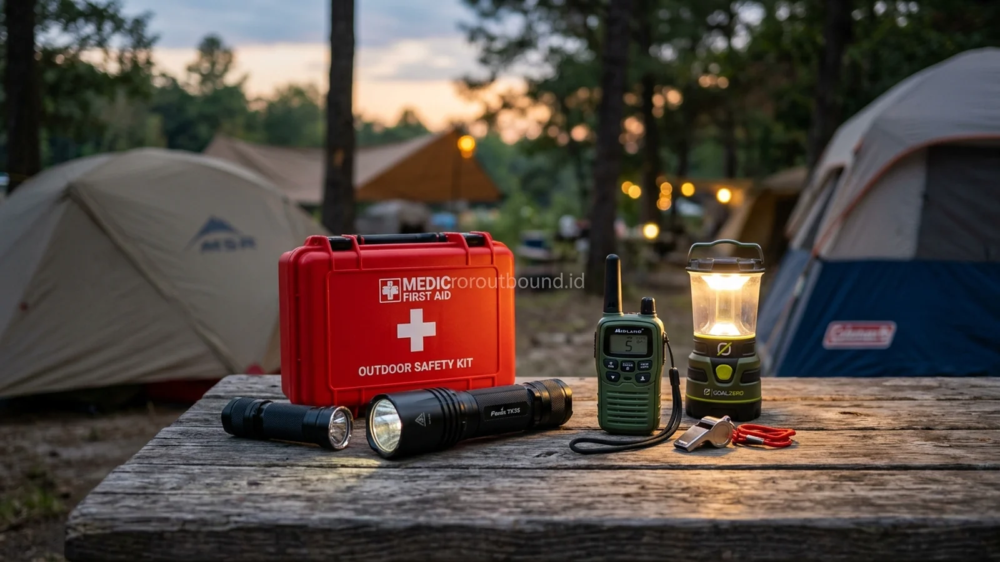

Apa Saja Persiapan K3 untuk Outbound Camping Malam?
Jawaban singkat: Persiapan K3 untuk outbound camping malam perlu dimulai sebelum peserta tiba di lokasi. Checklist dapat mencakup kondisi tenda, penerangan, jalur keluar-masuk, titik kumpul, akses komunikasi, kondisi cuaca, perlengkapan P3K, serta rencana evakuasi. Kebutuhan pertolongan pertama harus disesuaikan dengan jenis kegiatan, jumlah peserta, karakter lokasi, dan prosedur yang disepakati bersama pengelola serta panitia.
Penyelenggaraan kegiatan luar ruangan di alam bebas selalu memiliki daya tarik tinggi dalam membangun keakraban tim. Namun, bagi Safety Officer perusahaan, panitia acara, maupun tim Human Resources, agenda perkemahan malam (night camping) membawa tanggung jawab ekstra di bidang Keselamatan dan Kesehatan Kerja (K3). Menginap di alam terbuka menghadirkan variabel lingkungan yang dinamis—mulai dari penurunan suhu drastis, keterbatasan jarak pandang akibat kegelapan, kontur tanah berbatu, hingga potensi perubahan cuaca yang tak terduga.
Menjaga keselamatan peserta perkemahan bukanlah tentang meniadakan seluruh tantangan alam, melainkan menerapkan manajemen risiko luar ruangan (outdoor risk management) yang terukur dan sistematis. Dengan merencanakan standard operating procedure (SOP) secara disiplin bersama penyedia Layanan Outbound Camping, potensi insiden dapat ditekan seminimal mungkin sehingga agenda kebersamaan perusahaan berlangsung lancar, tertib, dan aman.
Identifikasi Risiko Sebelum Peserta Datang
Manajemen risiko K3 yang efektif dimulai dari tahap pra-kegiatan, jauh sebelum rombongan bus atau kendaraan operasional tiba di lokasi. Panitia bersama perwakilan pengelola perkemahan wajib melakukan pemetaan bahaya (hazard identification) di area tapak kemah. Beberapa aspek risiko lingkungan yang perlu dianalisis meliputi:
- Kemiringan Tanah dan Saluran Air: Menghindari pemasangan tenda di ceruk tanah rendah yang rawan tergenang air saat hujan atau di lereng bukit curam yang berisiko longsor saat tanah jenuh air.
- Pohon Rapuh dan Dahan Mati (Deadfall): Memeriksa tajuk pepohonan di atas deretan tenda untuk memastikan tidak ada dahan lapuk yang berpotensi patah tertiup angin kencang di malam hari.
- Flora dan Fauna Sekitar: Memastikan area tenda bersih dari sarang serangga penyengat (lebah, semut api) dan menaburkan kapur belerang di sekeliling batas perkemahan jika diperlukan untuk meminimalkan masuknya serangga melata.
- Jarak Antara Tenda: Memberikan koridor lorong jalan antartenda selebar minimal 1,5 hingga 2 meter untuk memudahkan mobilitas peserta serta mencegah tali pasak tenda saling bersilangan.
Checklist Inspeksi Lokasi Camping
Untuk memastikan tidak ada elemen keselamatan yang terlewatkan selama survei teknis dan persiapan lapangan, panitia dianjurkan memegang lembar checklist verifikasi K3 berikut:
| Aspek Keselamatan | Status Verifikasi Lapangan |
|---|---|
| Kondisi lokasi | Sudah diperiksa kontur tanah, drainase air, dan radius bahaya lingkungan. |
| Tenda | Layak digunakan, jahitan kuat, resleting berfungsi, dan pasak terpasang kokoh. |
| Penerangan | Cukup menerangi jalur pejalan kaki, area MCK, dan perapian komunal. |
| Jalur berjalan | Tidak terhalang bebatuan lepas, akar pohon licin, atau tali bentangan tenda. |
| Titik kumpul | Ditentukan di tanah lapang datar yang bebas dari potensi reruntuhan dahan. |
| Kontak darurat | Tersedia nomor faskes terdekat, kepolisian lokal, dan pengelola kawasan. |
| P3K | Disiapkan kotak darurat lengkap beserta penanggung jawab yang bertugas. |
| Cuaca | Dipantau melalui prakiraan BMKG berkala dan pengamatan visual lapangan. |
| Area api unggun | Sesuai aturan venue, bersih dari material mudah terbakar, dan alat pemadam siap. |
| Toilet | Diverifikasi jumlah bilik, kebersihan, ketersediaan air, dan kuncian pintu. |
| Air bersih | Diverifikasi kecukupan debit air untuk konsumsi minum dan sanitasi peserta. |
| Komunikasi | Tersedia walkie-talkie operasional antarpersel panitia dan cadangan daya baterai. |
| Rencana evakuasi | Disiapkan jalur keluar darurat menuju jalan aspal yang bisa dilalui mobil ambulans. |
| Kontingensi hujan | Disiapkan aula penampungan tertutup (shelter) jika tenda mengalami kebocoran. |

Manfaat Camping & Outbound Night Activity Untuk Membentuk Kedisiplinan Tim
Pahami bagaimana suasana malam di alam bebas membangun ruang interaksi yang hangat, jujur, dan mempererat solidaritas kerja.
Penerangan dan Aktivitas Malam
Pencahayaan adalah instrumen keselamatan paling fundamental pada malam perkemahan. Mayoritas kecelakaan ringan di tapak perkemahan—seperti terantuk pasak tenda, terpeleset tanah basah, atau salah jalur—disebabkan oleh penerangan yang tidak memadai.
Sistem penerangan perkemahan sebaiknya dibagi menjadi tiga lapis pencahayaan: penerangan area komunal (lampu sorot hemat energi atau string light untuk area kumpul bersama), penerangan jalur navigasi (lentera gantung atau solar path light penanda jalan menuju toilet), dan penerangan portabel pribadi (senter kepala / headlamp yang wajib dibawa masing-masing peserta). Panitia wajib mengingatkan peserta agar tidak berjalan di area perkemahan tanpa menyalakan penerangan pribadi.
Persiapan Pertolongan Pertama
Dalam menyusun kesiapan pertolongan pertama pada kecelakaan (P3K), panitia harus memahami batasan kompetensi non-medis. Pertolongan pertama di perkemahan bertujuan memberikan stabilisasi awal dan perawatan darurat pada cedera ringan, bukan melakukan tindakan diagnosis atau intervensi medis kompleks.
Kit P3K standar perkemahan harus mencakup: antiseptik pembersih luka (povidone iodine), kain kasa steril, plester cepat berbagai ukuran, perban elastis (crepe bandage) untuk penanganan terkilir, gunting perban, sarung tangan lateks sekali pakai, termometer digital, dan cairan oralit pengganti elektrolit. Sangat penting bagi panitia untuk mengimbau seluruh karyawan membawa obat-obatan pribadi yang rutin dikonsumsi (misalnya obat asma inhaler, obat alergi, atau penurun tekanan darah) dan melaporkannya kepada koordinator kesehatan sebelum keberangkatan.
Apabila terjadi cedera berat, sesak napas akut, atau dugaan patah tulang, prinsip utamanya adalah: hentikan aktivitas, tenangkan korban, jangan memindahkan korban tanpa teknik imobilisasi yang benar, dan segera hubungi fasilitas pelayanan kesehatan (Puskesmas/Rumah Sakit) terdekat sesuai SOP rujukan darurat yang telah disiapkan.

Bagaimana Menentukan Titik Kumpul dan Jalur Evakuasi?
Titik kumpul darurat (emergency assembly point) merupakan lokasi yang disepakati bersama sebagai tempat seluruh peserta berkumpul apabila terjadi situasi darurat, seperti ancaman pohon tumbang akibat badai, kebakaran, atau gempa bumi kecil. Titik kumpul harus berada di area terbuka yang lapang, bebas dari bahaya jatuhan objek di atas kepala, dan memiliki akses jalan langsung menuju pintu gerbang perkemahan.
Jalur evakuasi harus ditandai dengan rambu reflektif yang terlihat jelas dalam kegelapan. Pastikan jalur tersebut tidak terhalang oleh tumpukan kayu bakar, kendaraan panitia yang diparkir sembarangan, atau bentangan tali tambang tenda. Kendaraan operasional darurat (rescue vehicle) harus diparkir dalam posisi siap jalan mengarah ke pintu keluar tanpa terhalang kendaraan lain.

Paket Outbound Camping & Fun Night Gathering Perusahaan Batu & Pacet
Pilihan fasilitas tenda, konsumsi katering, sesi api unggun aman, dan fasilitator profesional di Jawa Timur.
Apa yang Harus Dilakukan Jika Hujan?
Hujan lebat yang disertai angin kencang pada malam hari menuntut kesiapsiagaan operasional panitia. SOP penanganan hujan mencakup tahapan terukur:
- Pemeriksaan Pasak dan Flysheet Tenda: Tim lapangan melakukan inspeksi keliling untuk mengencangkan tali pancang tenda dan memastikan lapisan penutup luar (flysheet) tidak menempel pada dinding tenda bagian dalam agar air tidak merembes.
- Pengalihan Air Tanah (Parit Darurat): Memastikan saluran air hujan di sekitar deretan tenda mengalir lancar ke arah hilir dan tidak membentuk genangan di bawah lantai terpal.
- Evakuasi ke Shelter Tertutup: Jika intensitas hujan disertai kilat petir atau angin kencang yang membahayakan struktur tenda, panitia segera menginstruksikan pemindahan peserta ke aula pendopo atau gedung pertemuan permanen yang telah disiapkan sebagai area kontingensi.
Checklist Fasilitas Toilet dan Sanitasi
Kenyamanan fisik dan psikologis peserta—terutama karyawan wanita dan peserta usia senior—sangat dipengaruhi oleh kelayakan sarana Mandi, Cuci, Kakus (MCK). Mengonfirmasi kondisi fasilitas toilet sebelum pelaksanaan acara merupakan kewajiban mutlak panitia:
- Rasio Toilet terhadap Jumlah Peserta: Memastikan jumlah bilik toilet mencukupi (rasio ideal sekitar 1 bilik toilet untuk setiap 15–20 peserta) agar tidak terjadi antrean panjang di pagi hari.
- Ketersediaan Pasokan Air Bersih: Memeriksa apakah tandon penampung air berfungsi dengan baik dan memiliki pompa air cadangan jika listrik perkemahan mengalami pemadaman.
- Penerangan dan Kebersihan Akses MCK: Jalur jalan dari area tenda menuju bilik toilet harus diterangi lampu secara memadai sepanjang malam dan tidak melalui semak-semak liar yang gelap.
- Fasilitas Pembuangan Sampah Higienis: Menempatkan tempat sampah tertutup di setiap bilik toilet untuk menjaga sanitasi lingkungan perkemahan.
Briefing Keselamatan untuk Peserta
Prosedur K3 yang dirancang secermat apa pun tidak akan berjalan efektif tanpa adanya komunikasi yang jelas kepada peserta. Sesi safety briefing wajib diselenggarakan segera setelah rombongan tiba di perkemahan dan sebelum peserta memasuki tenda masing-masing.
Poin-poin utama safety briefing meliputi: pengenalan tata letak tapak kemah, batas perimeter area aman yang boleh dijelajahi, lokasi toilet dan titik kumpul darurat, aturan dilarang merokok atau menyalakan lilin di dalam tenda, kewajiban mengenakan alas kaki saat keluar tenda di malam hari, serta nomor telepon atau tenda posko darurat panitia yang dapat dihubungi kapan saja.

Paket Outbound Camping Wisata & Offroad Batu Mojokerto
Kombinasi seru berkemah di hutan pinus dan jelajah offroad seru dengan standar keselamatan dan manajemen risiko teruji.
Contoh SOP Kontingensi Sederhana
Untuk memudahkan koordinasi antartim internal, panitia dapat menyusun matriks kontingensi ringkas berdasarkan tingkat keparahan situasi:
| Skenario Insiden | Tindakan Cepat Lapangan | Penanggung Jawab (PIC) |
|---|---|---|
| Luka gores / lecet ringan | Pembersihan luka dengan antiseptik dan penutupan kasa steril di posko P3K. | Koordinator Medis Panitia |
| Tenda bocor / rembes air | Pemasangan flysheet darurat atau pemindahan peserta ke tenda cadangan. | Tim Logistik Lapangan |
| Pemadaman listrik lokal | Aktivasi genset cadangan dan penyalaan lentera baterai di jalur utama. | Koordinator Teknis Venue |
| Peserta sakit parah / demam tinggi | Stabilisasi awal dan rujukan langsung ke Puskesmas menggunakan kendaraan rescue. | Safety Officer & Pimpinan Rombongan |
Pastikan Keselamatan Acara Camping Kantor Anda Bersama Kami
Ingin membahas checklist K3, kesiapan evakuasi medis, dan kebutuhan teknis outbound camping? Hubungi admin Vendor Outbound di +62 82211221909 untuk konsultasi program dan venue.
Hubungi Kami via WhatsAppKesimpulan
Penerapan K3 dalam outbound camping malam bukanlah penghambat keseruan kegiatan, melainkan fondasi utama agar seluruh peserta dapat menikmati keindahan alam dan kehangatan kebersamaan dengan tenang. Melalui inspeksi lokasi yang cermat, ketersediaan penerangan navigasi yang memadai, kesiapan kotak P3K dasar, serta rencana kontingensi cuaca yang matang, panitia perusahaan dapat mewujudkan agenda perkemahan yang tidak hanya mempererat ikatan tim, namun juga memenuhi standar keselamatan kerja yang bertanggung jawab.
Pertanyaan Sering Diajukan (FAQ)

Arby Ardiansyah
Arby Ardiansyah merupakan penulis konten yang membahas outbound, experiential learning, team building, family gathering, dan kegiatan pengembangan karakter untuk kebutuhan sekolah, keluarga, komunitas, maupun perusahaan.